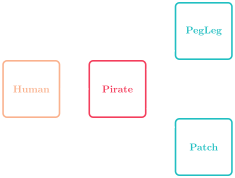

Inheriting Snakes
Jed Rembold
November 4, 2022
Announcements
- ImageShop due tonight!
- I’ll be around most of the afternoon until 6:30
- New (and last!) problem set will go out tomorrow
- My priority this weekend is to get grade reports issued
- I’m deeply sorry these have taken as long as they have. I’ve needed time to make changes to my system and the past 3 weeks have been crazy for me
- Polling: rembold-class.ddns.net
Review Question
The code block to the right starts defining a class. Only 1 of the
below options for defining an increment
method will work. Which one?
class BestCounter:
def __init__(self, start):
self.counter = startdef increment(self, value):
counter += valuedef increment(value):
counter += self.valuedef increment(self, value):
self.counter += self.valuedef increment(self, value):
self.counter += valueSpecifying Inheritance
Subclass definitions in Python differ from standalone classes in two ways:
- A subclass definition includes the name of its superclass in parentheses after the name of the subclass
- The constructor for the subclass explicitly calls the constructor for its superclass before doing its own initialization
Together, they form the following pattern:
class subclass(superclass): def __init__(self, parameters): superclass.__init__(self, any_relevant_parameters) # Rest of subclass initialization
A Swashbuckling Example

Some Swashbuckling Code
class Human:
def __init__(self, name, age):
self.name = name
self.age = age
self.speed = 10
self.perception = 10
def __repr__(self):
return f'Human({self.name},{self.age})'
def agree(self):
print('Sure!')
class Pirate(Human):
def agree(self):
print("Aye matey!")
def __repr__(self):
return f'Pirate({self.name},{self.age})'
class Pegleg(Pirate):
def __init__(self, name, age):
Pirate.__init__(self, name, age)
self.speed = 5
def __repr__(self):
return f'Pegleg({self.name},{self.age})'
class Patch(Pirate):
def __init__(self, age):
Pirate.__init__(self, name, age)
self.perception = 5
def __repr__(self):
return f'Patch({self.name}, {self.age})'
Overusing Inheritance
- Inheritance is often used in situations where it does not really
apply
- A common example you might see in textbooks is a
Pizzaclass with various subclasses of pizza, like Pepperoni or Hawaiian. - This is silly, there is only one point of difference between those:
the ingredients
- Just make a pizza class with a list of ingredients as an attribute
- A common example you might see in textbooks is a
- Inheritance makes sense when subclasses share behavior
Extensions
- While designing new class hierarchies will prove useful as you move on to larger applications, it is often more useful to extend existing classes to add new, desirable behavior
- This can be done with any existing class, but a few classes in the
GObjecthierarchy make very enticing targets as the bases for potential extension:- The
GPolygonclass makes it easy to define new subclasses that have a polygonal outline.- Also automatically support filling, since
GPolygonis a subclass ofGFillableObject
- Also automatically support filling, since
- The
GCompoundclass can serve as a great parent for new subclasses that are composed of a combination of other shapes.
- The
- In either case, it is generally useful to add additional methods or attributes to the subclass that are specific to that type.
Graphical Object Decomposition
- Using the
GCompoundclass as a parent class makes it possible to apply the strategy of decomposition to graphical objects!- Can decompose a graphical display into successively simpler pieces
- Here I will use as an example a simple segmented snake

The Snake Hierarchy
- Here I will utilize a generic snake body segment which will be a
subclass of
GCompound- The snake head and tail segments will then be subclasses of the body
segment class

- The snake head and tail segments will then be subclasses of the body
segment class
- All the common elements will be added in the body segment, with the head and tail subclasses only adding their specific details.

Nesting Snakes
- Since a
GCompoundis also aGObject, you can go ahead and add aGCompoundto anotherGCompound - Here I will add all the snake pieces to a new class
Snake, which is a subclass ofGCompound - One advantage of doing so is that we can then animate the entire snake as a whole easily!
Snakey Code
from pgl import GWindow, GCompound, GOval, GLine, GPolygon
R = 50
class Segment(GCompound):
""" Create as generic snake body segment. """
def __init__(self):
GCompound.__init__(self)
body = GOval(-R, -R,
2*R, 2*R)
body.set_filled(True)
body.set_fill_color('green')
body.set_line_width(5)
self.add(body)
class Tail(Segment):
def __init__(self):
Segment.__init__(self)
tri = GPolygon()
tri.add_vertex(0, R)
tri.add_vertex(0, -R)
tri.add_vertex(-3*R, 0)
tri.set_filled(True)
tri.set_fill_color('green')
tri.set_line_width(5)
self.add(tri)
tri.send_to_back()
class Eye(GCompound):
def __init__(self):
GCompound.__init__(self)
eye = GOval(-10,-5,20,10)
eye.set_filled(True)
eye.set_color("white")
pupil = GOval(-5,-5,10,10)
pupil.set_filled(True)
self.add(eye,-10,-5)
self.add(pupil, 0,-5)
class Head(Segment):
def __init__(self):
Segment.__init__(self)
self.add(Eye(), 10, 20)
self.add(Eye(), 10, -20)
tongue = GLine(R, 0, 2*R, 0)
tongue.set_line_width(5)
tongue.set_color('red')
self.add(tongue)
class Snake(GCompound):
""" Put all the snake pieces together. """
def __init__(self, length):
GCompound.__init__(self)
self.add(Tail(), 0, 0)
for i in range(1,length-1):
self.add(Segment(), i*R, 0)
self.add(Head(), (length-1)*R, 0)
def make_snake():
def move_snake():
snake.move(10,0)
gw = GWindow(800,400)
snake = Snake(3)
gw.add(snake, -500,200)
gw.set_interval(move_snake, 30)
make_snake()